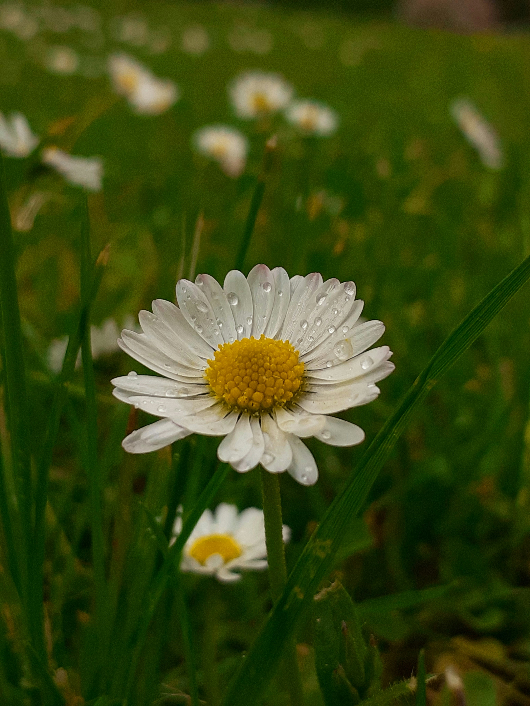

Daisy
Bellis perennis
Daisy is a cheerful flower known for its simple white petals and bright yellow center. It is a popular choice for gardens, lawns and flower arrangements.
Full Sun
Moderate
Well Drained
Spring & Summer
How to Care for Daisy
Daisies grow well with plenty of sunlight, moderate watering and fertile, well-drained soil.
Sunlight
Give daisies a sunny location where they can receive several hours of sunlight each day.
Watering
Water when the soil starts to dry. Keep the soil moist but avoid excessive standing water.
Soil
Use fertile, loose and well-drained soil to support healthy root growth.
Maintenance
Remove faded flowers regularly to keep the plant looking fresh and encourage new blooms.
How to Grow Daisy
Daisies are relatively easy to grow and can be planted in gardens, borders and suitable containers.
Choose a Sunny Spot
Select a location with plenty of sunlight and enough space for the plant to spread.
Prepare the Soil
Use fertile soil that drains well and does not remain waterlogged after watering.
Plant the Seeds
Sow the seeds in prepared soil and keep the surface lightly moist during germination.
Care for the Plant
Provide regular sunlight and watering while removing faded flowers as needed.
Daisy Fact 🌼
The name Daisy comes from the phrase "day's eye", referring to the way the flower opens during the day and closes at night.